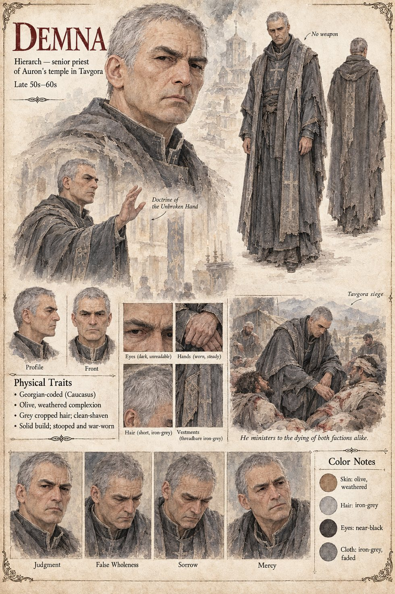

Demna
Hierarch, senior priest of Auron's temple in Tavgora · late 50s–60s on the sheet
Senior priest of Auron's temple in Tavgora, who rules that the Doctrine of the Unbroken Hand bars a hand that claims the wholeness a sleeve would honestly confess it lacks. Three weeks earlier Bagrat's gold reached him by way of Sandro, and he has never once, in his own prayers, managed to convince himself that the gold is the reason he believes what he is about to say. The night before the ruling he kneels alone at Auron's altar and tells the god that the gold changes nothing about the law's truth, only about how quickly he got around to remembering it; the distinction satisfies him there, and considerably less so in court the next morning. He is not struck down, which one faction treats as proof of nothing and the other as proof of everything.
It is Demna who first says aloud, in Bagrat's hearing, the sentence that gives the king's private ledger a public name: that a false wholeness worn long enough begins to believe itself real. By the war's second month he is unpaid, unasked, and at the wall, praying in the same words over a dying man from each faction in the same week. The sheet draws him stooped and war-worn, clean-shaven with cropped iron-grey hair, in threadbare iron-grey vestments and carrying no weapon.
“The Doctrine does not ask whether a hand functions. It asks whether a hand is the one Auron gave.”
Appears In

Related Subjects


Related Records

Demna, alone before Auron's altar the night before the ruling, telling the god that the gold changes nothing about the law's own truth, only about how quickly he got around to remembering it — a distinction he finds entirely satisfying there, and considerably less so in court the next morning.